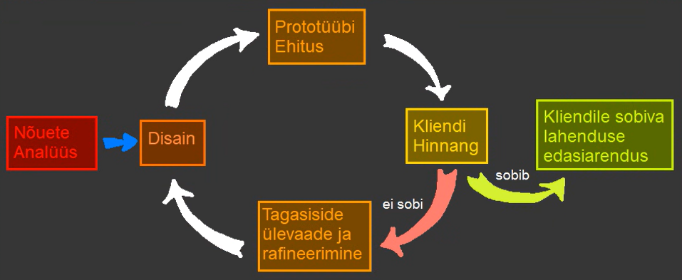

Prototüüpimis arendusmudel
Prototüüpimis arendusmudelit kasutatakse kui klientidel ei ole kindlat ideed lõpptulemuse kohta, see hõlmab
mitmete 'prototüüpide'(e lõpetamata algeliste versioonide) loomist ja nende tagasiside alusel järgmiste
prototüüpide loomist
kuidas on Prototüüpimise arenduses tegevuste käik
1. Nõuete kogumine ja analüüs
Nõuete analüüs on prototüübi mudeli väljatöötamise esimene samm. Selle etapi käigus määratletakse täpselt süsteemi soovid.
Meetodi käigus intervjueeritakse süsteemi kasutajaid, et teha kindlaks, mida nad süsteemilt ootavad.
2. Kiire algeline disain
Teises etapis luuakse kiire põhidisain, mis ei ole taäielik disain ning näeb uusi muudatusi hiljem. Disain annab kasutajadele
kiire ülevaate süsteemist. Ning aitab kaasa prototübi väljatöötamisele
3. Prototüübi loomine
Kolmandas etapis luuakse eelnevas etapis loodud kiirdisaine abil tegelik prototüüp, mis on siiski soovitud süsteemi väike algeline mudel
4. Esialgne kasutajate tagasiside
Neljandas etapis esitatakse süsteem kliendile eeltestimiseks. Kliendi tagasiside kogutakse ning edastatakse arendajale
5. Prototüübi täiustamine
Kui kasutaja pole paeguse mudleiga rahul, täiustatakse olemasolev mudel vastavalt kliendi nõuetele. (Seda korratakse kuni
saavutatakse kliendile sobiv prototüüp). Kui kasutaja on täiustatud mudeliga rahul, luuakse kinnitatud lõplikul tüübil
põhinev lõplik süsteem
6. Toote juurutamine ja haldamine
Lõplik süsteem testiti täielikult ja levitatakse tootmiskeskkonda, kui see oli välja toodtud algse versiooni toetamiseks
Prototüüpimis mudelite tüübid
Prototüüpimismudeleid on nelja tüüpi
1. Kiire ühekordne prototüüpimine
- Pakub kasulikku meetodit ideede uurimiseks ja igaühe kohta klientide tagasiside saamiseks
- Selle meetodi puhul ei pea väljatöötatud prototüüp tingimata olema osa aktsepteeritud prototüübist
- Klientide tagasiside aitab vältida tarbetuid disainivigu ja seega on väljatöötatud lõplik prototüüp parema kvaliteediga
2. Evolutsiooniline prototüüpimine
- See meetod erineb eelnevast, kuna selle puhul täiustatakse algselt väljatöötatud prototüüpi klientide tagasiside põhjal
nii kaua kuni see heaks kiidetakse
- Pakub paremat kvaliteeti võrreldes eelneva tüübiga
3. Järkjärguline prototüüpimine
- Selle tüübi puhul jagatakse lõpptoode väiksematkes protoüüpideks ja arendatakse individuaalselt
- Kui kõik osad on korralikult välja töötatud, ühendatakse need lõpptooteks
- See on tõhus lähenemis viis, sest vähendab arendusprotsessi keerukust
- Projekti alguse ja lõpliku tarnimise aja vahemik on lühem, kuna kõiki osasid arendatakse ja testitakse samaaegselt
- Kuid võib juhtuda et osad ei sobi kokku, ning vajavad kogu süsteemi hoolika ja täielikku ülevaadet
4. Äärmuslike prototüüpimine
Kasutatakse peamiselt veebiarenduses, koosneb kolmest etapist
- Esitatakse HTML vormingus põhiline prototüüp koos kõigi lehtedega
- Luuakse funktsionaalsed ekraanid simuleeritud andmeprotsessidega, kasutades prototüüpteenuse kihti
- Kõik teenused rakendatatakse ja seostatakse lõpliku prototüübiga
Arendusmudeli head ja vead
| Head küljed |
Halvad küljed |
| Kliendid saavad algelise ülevaate alguses |
Kulukas aja ja raha osas |
| Uute nõuetega on lihtsam kohaneda |
halb dokumentatsioon pidevate nõudmiste muutuste tõttu |
| Paindlikus |
Võib tekkida konflikte |
Arendusmudeli joonis
